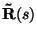

|
You are here : Control System Design - Index | Book Contents | Appendix B | Section B.5 B. Smith-McMillan FormsB.6 Matrix fraction descriptions (MFD)A model structure that is related to the Smith-McMillan form is that of a matrix fraction description (MFD). There are two types, namely a right matrix fraction description (RMFD) and a left matrix fraction description (LMFD). We recall that a matrix and its Smith-McMillan form are equivalent matrices. Thus, there exist two unimodular matrices, and , such that
This implies that if is an proper transfer function matrix, then there exist a matrix and an matrix  such as
where and are, for example, given by
We next define the following two matrices: where and are matrices. Hence, can be written as
Combining (B.6.2) and (B.6.6), we can write
where
Equations (B.6.7) and (B.6.8) define what is known as a right
matrix fraction description (RMFD). It can be shown that
is always column equivalent to a column proper matrix
where is said to be a right common factor. When the only right common factors of and are unimodular matrices then, from definition B.7 we have that and are right coprime. In this case, we say that the RMFD is irreducible. It is easy to see that when a RMFD is irreducible, then
Remark 1.1 A left matrix fraction description (LMFD) can be built similarly with a different grouping of the matrices in (B.6.7). Namely
where
The left and right matrix descriptions have been initially derived starting from the Smith-McMillan form. Hence, the factors are polynomial matrices. However, it is immediate to see that they provide a more general description. In particular, , , and are generally matrices with rational entries. One possible way to obtain this type of representation is to divide the two polynomial matrices forming the original MFD, by the same (stable) polynomial. An example summarizing the above concepts is considered next. Example 1.2 Consider a MIMO system having transfer function
Solution
These can then be turned into proper transfer function matrices by introducing common stable denominators. |